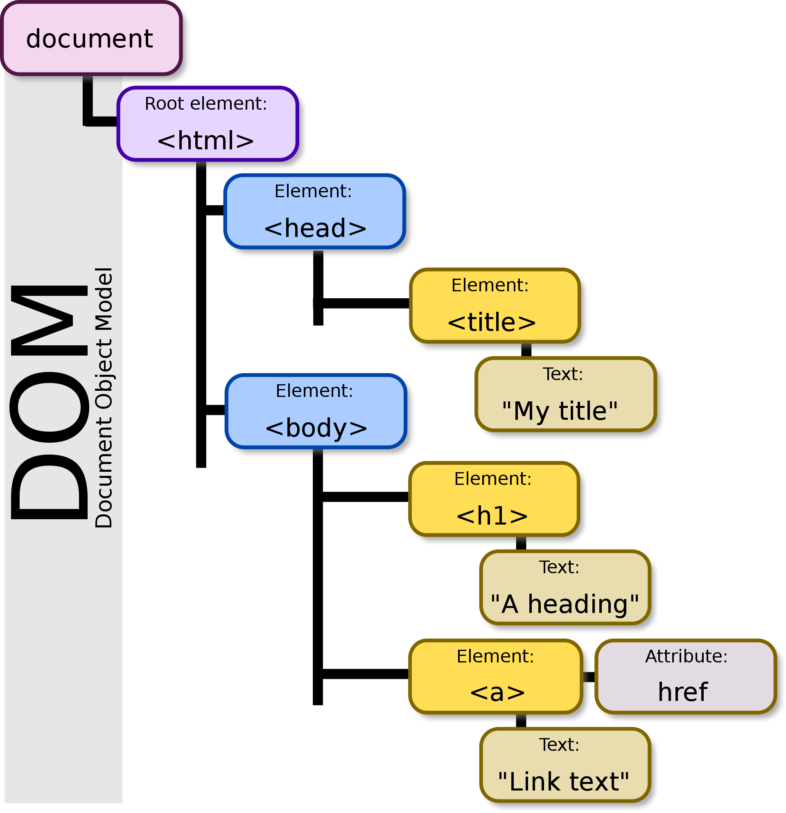
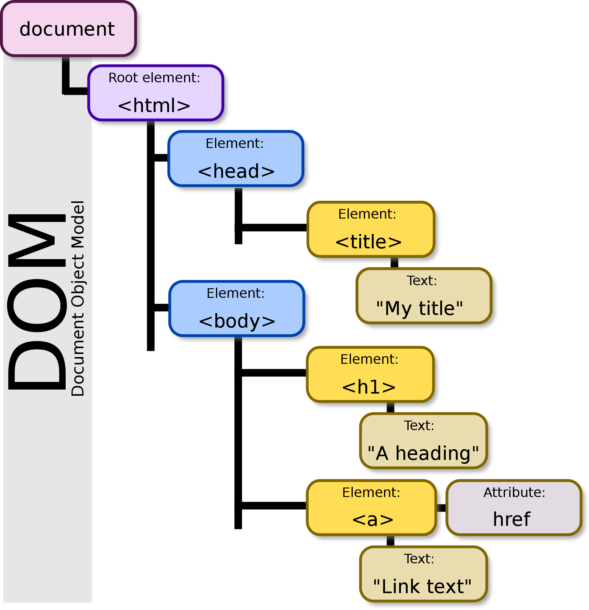

Github Pages v2
*before anything, add, commit, and push all your HW
Intro to JavaScript
JavaScript is a programming language that allows you to make interactive and dynamic websites.
JavaScript is considered a client-side and server-side scripting language.
Client-side:
Server-side:
Practice in class: alert() and console.log()
 
